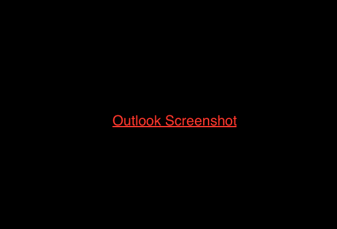

Signaturen-Tool
1 Anleitung
Tragt rechts eure persönlichen Daten ein. Ihr könnt (optional) eure Position im
Verein angeben (Vorstand, Gruppenleitung etc.)
Um die Signatur in euer Mail-Programm
einzubinden folgt ihr den Anleitungen unten.
3 Vorschau
2 Eingabefelder
4 Signatur einbinden
- 1. -Taste+R drücken
- 2. Kopiert den Pfad " %AppData%\Microsoft\Signatures " in das Eingabefeld und drückt Enter.
- 3. Kopiert eure heruntergeladenen Signatur in den Ordner, der sich öffnet.
-
4. Öffnet Outlook; Beim Verfassen einer neuen Mail klickt auf die Registerkarte
"Einfügen"
dann
"Signatur" und schließlich
"Signaturen..."
 -
5. Wählt in dem sich öffnenden Dialogfenster eure Signatur aus und übernehmt
die Einstellungen wie unten dargestellt.
- 6. Fertig Beim Verfassen einer neuen E-Mail mit eurer Adresse erscheint jetzt automatisch die Signatur.
-
1. Rechtsklick auf euer Konto und dann den Menüpunkt
"Einstellung" auswählen.

-
2. Setzt im sich öffnenden Menüfenster den Haken bei
"Stattdessen eine Datei ... und
wählt unter
"Durchsuchen" eure Signatur
aus.
- 3. Fertig Beim Verfassen einer neuen E-Mail mit eurer Adresse erscheint jetzt automatisch die Signatur.
Work in progress